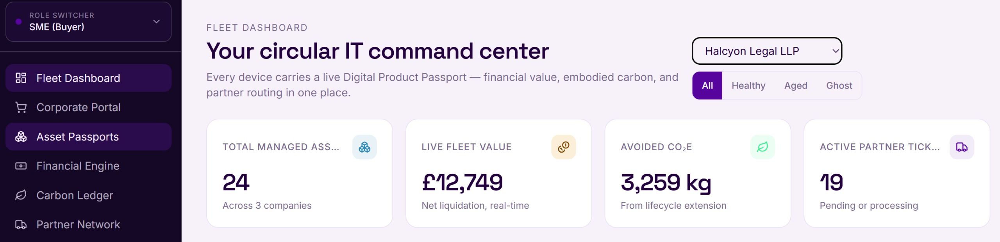
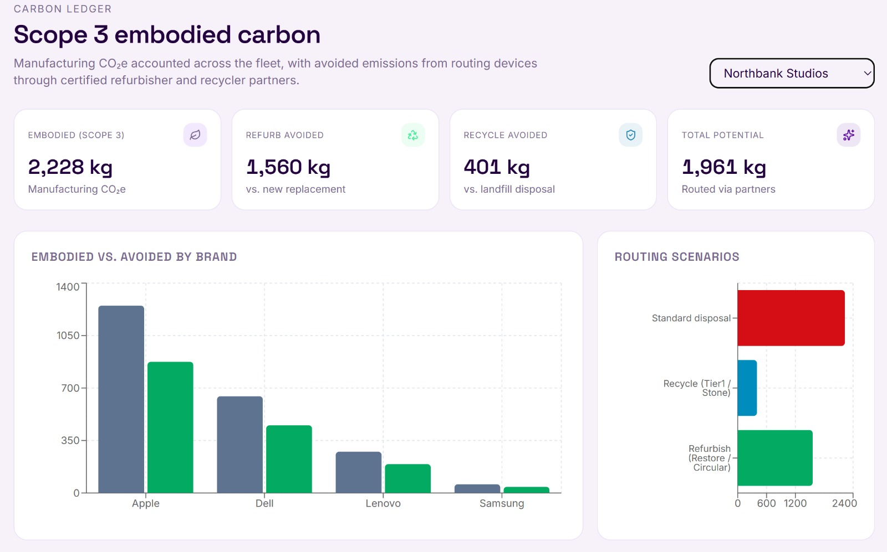

Track
A reliable record of every device: ownership, location, age, and condition.
C-Eco | Know what your technology is worth. Decide what happens next.
The difficult part is knowing when to keep them, when to replace them, and what to do with them afterwards.

Problem
Most organisations don't really know when the right time is to replace a device.
Renew too early and you may be writing off equipment that still has useful life — and resale value — left in it.
Renew too late and you may be accepting slower performance, higher failure rates and increasing operational or compliance risk.
And when a device finally leaves the business, the picture often becomes even less clear:
If your decisions are driven by supplier renewal reminders, fixed replacement cycles, incomplete asset records or simply the feeling that a device is getting old, we can help you make better choices.
Solution
C-Eco brings together the financial, compliance, and environmental sides of every device. In this new platform we are creating is easier decide whether to keep, repair, resell, or replace devices based on evidence, not a guess.
A reliable record of every device: ownership, location, age, and condition.
Understand the financial, operational, compliance and environmental implications of the available options.
See a clear recommendation based on the evidence — whether to keep, repair, renew, reuse, resell or recycle.
Proof of what happened, kept on file: resale, recycling, and data destruction records.
Connect the decision to the right next step or lifecycle service when needed.
Keep a record of what happened, including resale, reuse, recycling and data-destruction outcomes.
How it works
Record the devices.
Weigh up remaining value, cost, condition, compliance and carbon impact.
See a clear recommendation: Refresh, keep, dispose.
Connect with the right service or provider.
Know what was sold, reused or recycled, value recovered and device's data.
The result is a clearer lifecycle from first use to final outcome. We're building this with real businesses. Tell us what you need.
Benefits
Identify opportunity costs, value, and replace at the right time.
Understand the condition and lifecycle of your devices to optimize decisions.
See the environmental implications of keeping technology in use versus replacing it — and consider those alongside cost and risk.
Our system make fact based recommendations, ultimately you decide what is best.
Maintain clearer records relating to disposal, recycling, and data destruction.
Audience
Whoever ends up making the call on your business's laptops and phones — IT, finance, operations, or just whoever's turn it is — C-Eco is built to make that decision easier, without adding a complex enterprise system on top of it.
About
C-Eco is an early-stage circular IT venture developing a simpler way for organisations to manage technology throughout its complete lifecycle — starting with a question most businesses can't yet answer with confidence: is now the right time to renew?
We're currently researching SME requirements, building relationships with lifecycle-service providers, and shaping our first pilot around real feedback.

We are speaking with UK businesses, IT professionals, finance professionals, and circular-economy service providers as we develop the first C-Eco pilot.
Contact